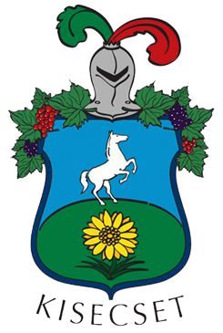

Kisecsetről
Kisecset nevét 1493-ban említette először oklevél Echet néven. 1493-ban Báthori István országbíró a váci káptalannak írt parancsában Legendi Bertalant iktattatta be az itteni Echet nevű birtokba, mely előtte néhai Romhányi György fiainak, Pálnak és Györgynek birtoka volt. 1559-ben, a török időkben végzett összeíráskor Ecsed néven írták, ekkor már viszonylag népes település, melynek éves jövedelme 1823 akcse, birtokosa pedig Gazenfer nevű tímár volt. 1598-ban Bornemisza György birtokának írták.